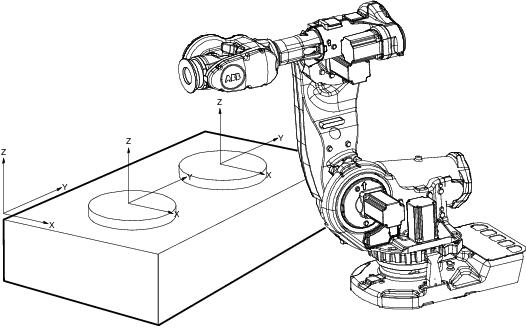

工件是拥有特定附加属性的坐标系。它主要用于简化编程（因置换特定任务和工件进程等而需要编辑程序时）。
工件坐标系必须定义于两个框架：用户框架（与大地基座相关）和工件框架（与用户框架相关）.
创建工件可用于简化对工件表面的微动控制。可以创建若干不同的工件，这样，您就必须选择一个用于微动控制的工件。
使用夹具时，有效载荷是一个重要因素。为了尽可能精确地定位和操纵工件，必须考虑工件重量。您必须选择一个用于微动控制。